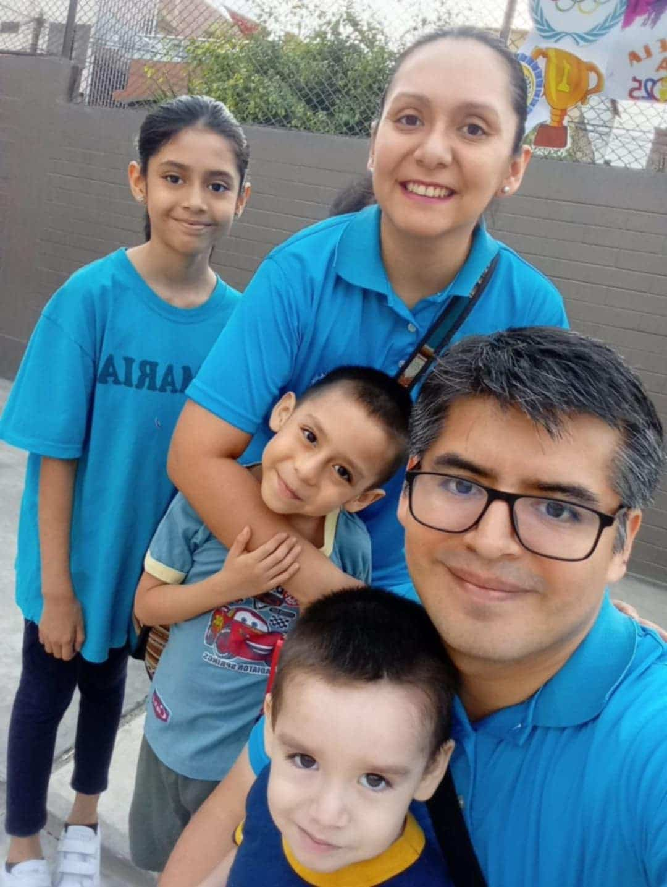

Arturo Romero | WDD 130
It is a pleasure to meet each of you. My name is Arturo Romero, and I am from Lima, Peru. I am happy for the opportunity to study at BYU-Idaho Online along with you and to keep progressing. I have three children, I got married in 2015, I served a mission in Peru Arequipa, and I have had the opportunity to serve in some callings in my ward and stake. I am currently serving as a counselor in the Elders Quorum. I like instrumental music, basketball, series, comics, and anime, but above all, I enjoy spending time with my family. At the moment, I am learning English and Portuguese.